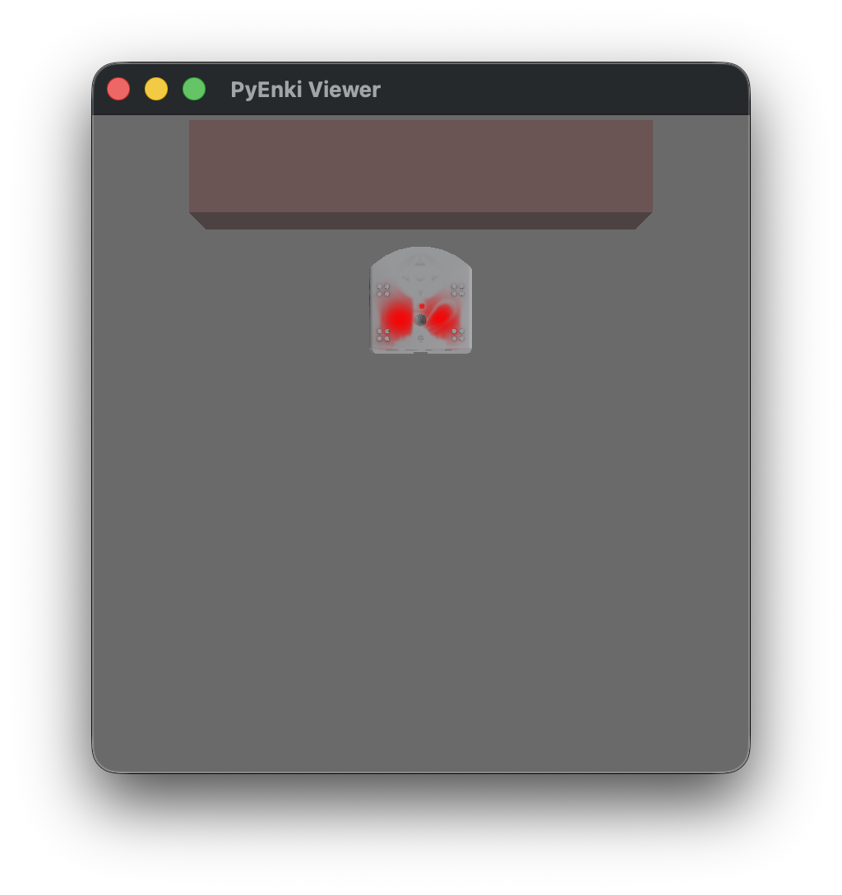

Simulation#
In the most common case, you add appropriate controllers for one or more robots, either by sub-classing or by assigning callbacks.
Then, you set up the world, adding as many objects as needed.
Finally, you may run and visualize the simulation in real time, or in batch-mode with pyenki.World.run() or by calling pyenki.World.step() in a loop.
Minimal Thymio#
In this example, two Thymio robots exchange IR messages, which we log at each time step. This is the Python equivalent to the C++ example
import math
from typing import cast
import pyenki
def log(thymio: pyenki.Thymio2, time: float) -> None:
events = thymio.prox_comm_events
if not events:
return
print(f"At time {time:.1f}, Thymio {thymio.name} received msgs")
for e in events:
print(
f"- value: {e.rx_value}, payloads: {e.payloads}, intensities: {e.intensities}"
)
def main() -> None:
dt = 0.1
world = pyenki.World(2000, 2000)
for i, (x, theta, tx) in enumerate(
zip((100, 115, 130), (0, math.pi, 0), (111, 222, 333),
strict=True)):
thymio = pyenki.Thymio2()
thymio.name = f"#{i}"
thymio.position = (x, 100)
thymio.angle = theta
world.add_object(thymio)
thymio.prox_comm_enabled = True
thymio.prox_comm_tx = tx
print("Start Simulation")
for i in range(15):
world.step(dt)
for robot in world.robots:
log(cast('pyenki.Thymio2', robot), dt * i)
print("End Simulation")
if __name__ == '__main__':
main()
Hello Thymio#
In this example, a Thymio will advance as long as there is not an obstacle (a wall) in front of it, when it will stop and switch the LED color to red from green.
import math
import sys
from typing import SupportsFloat
import pyenki
import pyenki.viewer
# The world update step will call `control_step` automatically
class ControlledThymio2(pyenki.Thymio2):
# This is the method we have to overwrite
# to implement a controller.
def control_step(self, time_step: SupportsFloat) -> None:
# Check if there is an obstacle in front of us
value = self.prox_values[2]
if value > 3000:
# A lot of light is reflected => there is an obstacle,
# so we stop and switch the LED to red
speed = 0.0
self.set_led_top(red=1.0)
else:
speed = 10.0
self.set_led_top(green=1.0)
self.left_wheel_target_speed = speed
self.right_wheel_target_speed = speed
def setup() -> pyenki.World:
# We create an unbounded world
world = pyenki.World()
# We add a Thymio at the origin,
# which can optionally use Aseba-like units and types.
thymio = ControlledThymio2()
thymio.position = (0, 0)
thymio.angle = 0
world.add_object(thymio)
# and a wall a bit in forward, in front of the Thymio.
wall = pyenki.PhysicalObject(l1=10,
l2=50,
height=5,
mass=1,
color=pyenki.Color(0.5, 0.3, 0.3))
wall.position = (30, 0)
world.add_object(wall)
return world
def main(gui: bool = False,
duration: float = 10,
dt: float = 0.1,
ortho: bool = False) -> None:
world = setup()
if gui:
# We can either run a simulation [in real-time] inside a Qt application
pyenki.viewer.run_in_viewer(world,
camera_position=(0, 0),
camera_altitude=70.0,
camera_yaw=0.0,
camera_pitch=-math.pi / 2,
walls_height=10,
camera_is_ortho=ortho,
duration=duration)
else:
# or we can write our own loop that run the simulation as fast as possible.
steps = int(duration // dt)
for _ in range(steps):
world.step(dt)
if __name__ == '__main__':
main(gui='--gui' in sys.argv, ortho='--ortho' in sys.argv)
Launching it with --gui will visualize a real-time simulation.
{kind=link}

{kind=link}